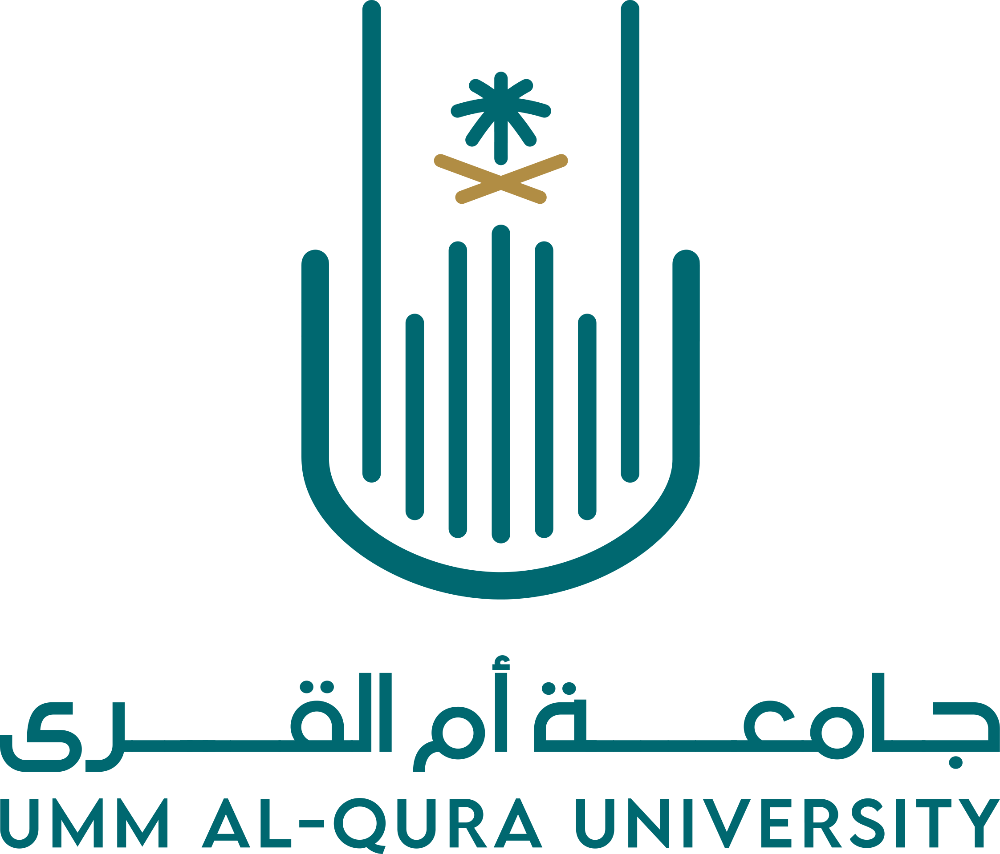
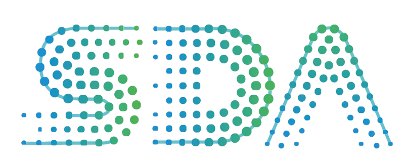

Umm Al-Qura University, Makkah جامعة أم القرى، مكة المكرمة
Saudi Digital Academy & WeCloudData, Remote الأكاديمية السعودية للتقنيات الرقمية & WeCloudData, عن بُعد
A 13-week, project-based curriculum spanning the full ML lifecycle:
- ML experimentation and hyperparameter tuning (MLflow), data versioning and pipeline design (DVC, Airflow/Kubeflow)
- CI/CD for ML (GitHub Actions, Docker), production model serving and monitoring (FastAPI/Flask, Prometheus/Grafana)
- Generative AI and LLMOps transformers, prompt engineering, embeddings, RAG pipelines, and vector databases
- a real capstone project in close collaboration with Beam Data's engineering team.
منهج تطبيقي لمدة ١٣ أسبوعًا يغطي دورة حياة التعلم الآلي المتكاملة:
- التجارب على نماذج التعلم الآلي وضبط المعاملات الفائقة (MLflow)، وإدارة إصدارات البيانات وتصميم خطوط المعالجة (DVC وAirflow/Kubeflow)
- التكامل والنشر المستمران للتعلم الآلي (GitHub Actions وDocker)، وتقديم النماذج ومراقبتها في بيئات الإنتاج (FastAPI/Flask وPrometheus/Grafana)
- الذكاء الاصطناعي التوليدي وLLMOps، بما يشمل Transformers وهندسة البرومبت والتمثيلات المتجهية وخطوط RAG وقواعد البيانات المتجهية؛
- مشروع التخرج الختامي بالتعاون المباشر مع فريق مهندسي Beam Data.